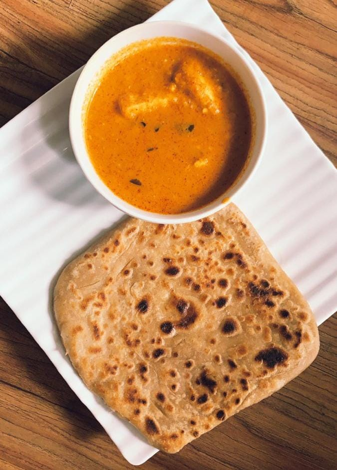

Chapati Curry
⭐⭐⭐⭐⭐ 4.8 Rating | ⏱ 40 Minutes | 🍽 4 Servings
Category
Lunch / Dinner
Difficulty
Easy
Calories
390 kcal
Cooking Style
Indian
📋 Ingredients
- 2 cups Wheat Flour
- Water (as required)
- Salt
- 2 tbsp Oil
- 2 Onions (chopped)
- 2 Tomatoes (chopped)
- 2 Potatoes (cubed)
- 1 tsp Ginger-Garlic Paste
- 1 tsp Turmeric Powder
- 1 tsp Red Chilli Powder
- 1 tsp Coriander Powder
- ½ tsp Garam Masala
- Fresh Coriander Leaves
🍳 Required Utensils
- Mixing Bowl
- Rolling Board
- Rolling Pin
- Tawa (Griddle)
- Cooking Pan
- Knife
- Spatula
- Serving Plate
📖 Introduction
Chapati Curry is a healthy and popular Indian meal enjoyed for lunch and dinner. Soft wheat chapatis are served with a flavorful vegetable curry prepared using fresh vegetables and Indian spices.
🔬 Principle
Chapati is cooked by dry roasting wheat dough on a hot tawa. The curry is prepared by cooking vegetables with spices until they become soft and absorb the flavors.
👨🍳 Procedure
- Mix wheat flour, salt, and water to prepare a soft dough.
- Rest the dough for 15 minutes.
- Divide into equal balls.
- Roll each ball into a thin chapati.
- Cook both sides on a hot tawa until brown spots appear.
- Heat oil in a pan.
- Add onions and sauté until golden brown.
- Add ginger-garlic paste and cook for 2 minutes.
- Add tomatoes and cook until soft.
- Add turmeric, chilli powder, coriander powder, and garam masala.
- Add potatoes and mix well.
- Add a little water and cook until vegetables become soft.
- Garnish with coriander leaves.
- Serve hot chapatis with vegetable curry.
⚠ Precautions
- Do not make the dough too hard.
- Cook chapati on medium flame.
- Do not burn the spices.
- Cook vegetables completely.
- Serve immediately for the best taste.
💡 Chef Tips
- Brush chapatis with butter or ghee.
- Add green peas or carrots to the curry.
- Use fresh coriander for extra flavor.
- Serve with curd or pickle.
- Add lemon juice before serving.
🥗 Nutrition Facts
| Nutrient | Amount |
|---|---|
| Calories | 390 kcal |
| Protein | 11 g |
| Carbohydrates | 58 g |
| Fat | 11 g |
| Fiber | 8 g |
🍽 Serving Suggestions
- Serve with curd.
- Serve with pickle.
- Serve with salad.
- Enjoy with buttermilk.
- Best served hot.
🌿 Health Benefits
- Rich in fiber.
- Good source of carbohydrates.
- Vegetables provide vitamins and minerals.
- Healthy and filling meal.
- Suitable for everyday lunch or dinner.
✅ Result
The prepared Chapati Curry should have soft, fluffy chapatis and a flavorful vegetable curry with perfectly cooked vegetables. It is a nutritious, delicious, and satisfying Indian meal.
🎥 Watch Recipe Video
Learn the complete recipe by watching the step-by-step video.
▶ Watch on YouTube